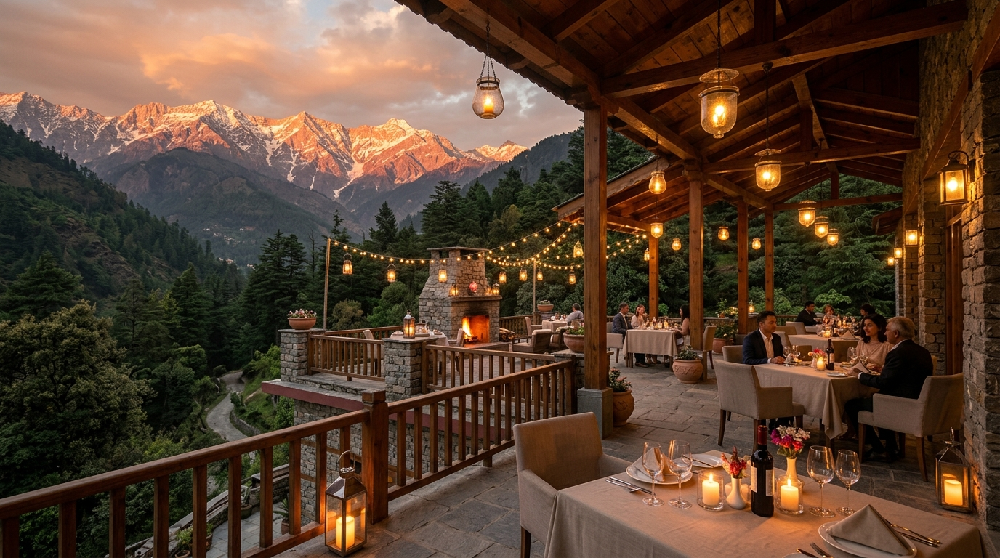
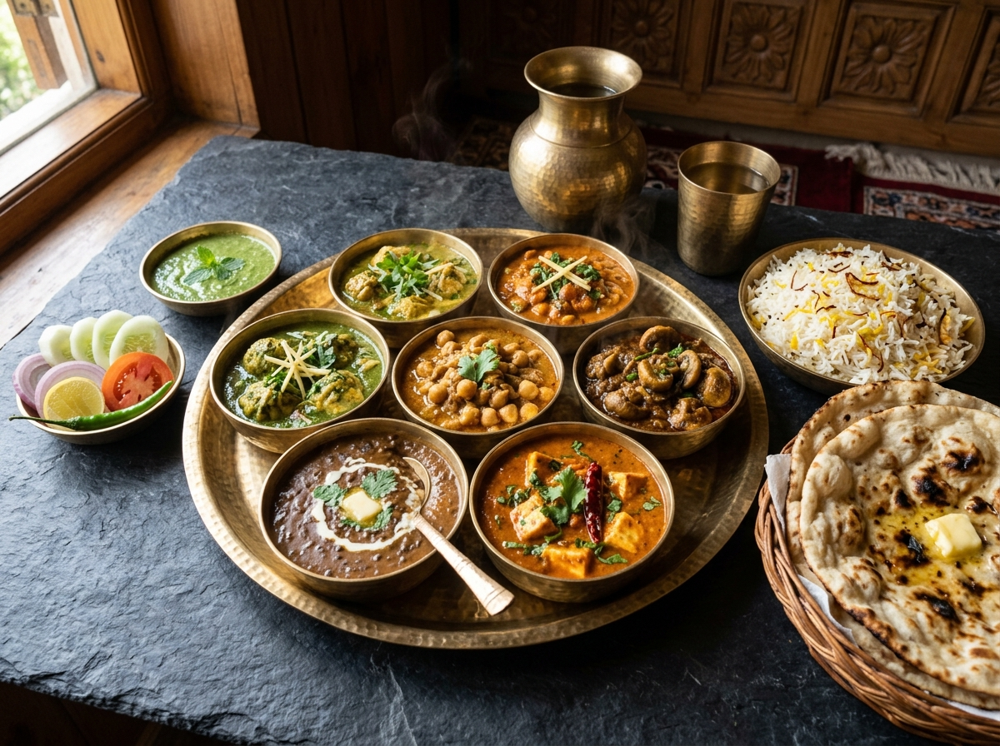

Born in the foothills of Kangra Valley, where mountain river stones meet age-old culinary wisdom and strictly pure vegetarian cuisine.
Situated in V.P.O. Tatal near Nurpur on the route connecting Punjab and the high Himalayan valleys of Kangra, Rock & Stone Restaurant was envisioned as an oasis of genuine Himachali hospitality.
The restaurant takes inspiration from the eternal rocks and river stones carved by the mountain streams of Himachal. Our architecture blends slate stone masonry, rustic timber beams, and open-air dining where travellers and local families can pause, breathe the pine-scented air, and relish comforting vegetarian meals.


In Himachal Pradesh, food is revered as Prasadam. The renowned Kangra Dham is traditionally a pure vegetarian feast, cooked without onion or garlic in brass cauldrons by the Botis (traditional hereditary chefs).
We keep this rich tradition alive. From our signature Kangra Madra—tender chickpeas simmered gently in spiced curd gravy—to our slow-churned Sepu Vadi and clay-roasted paneer, every dish is prepared with complete dietary integrity.
We operate with full governmental compliance and food safety certifications.
Food Safety and Standards Authority of India
Government of Himachal Pradesh